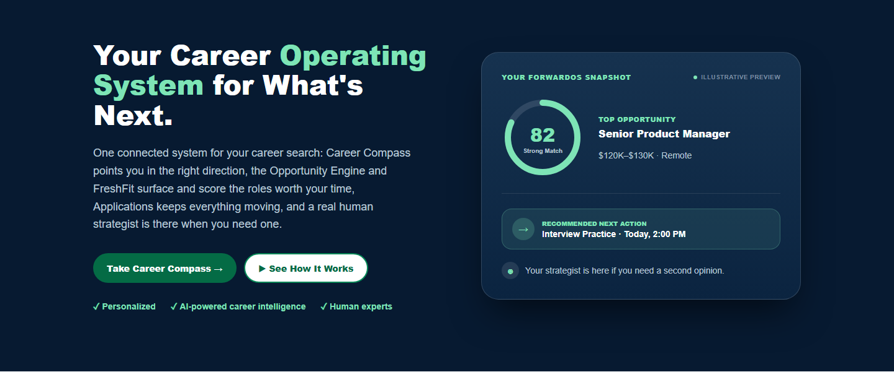
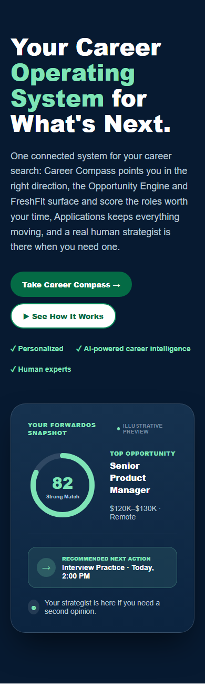
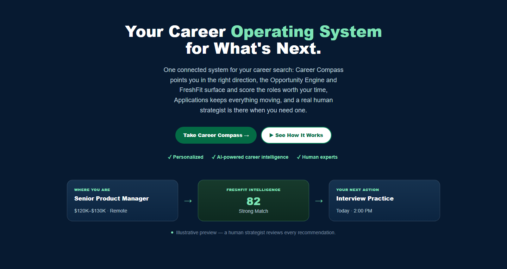
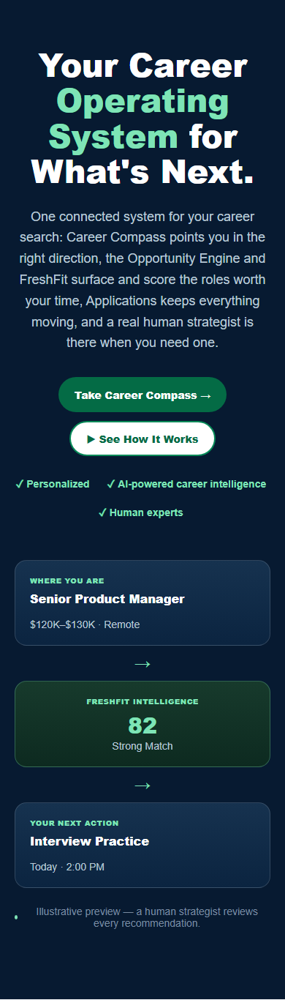
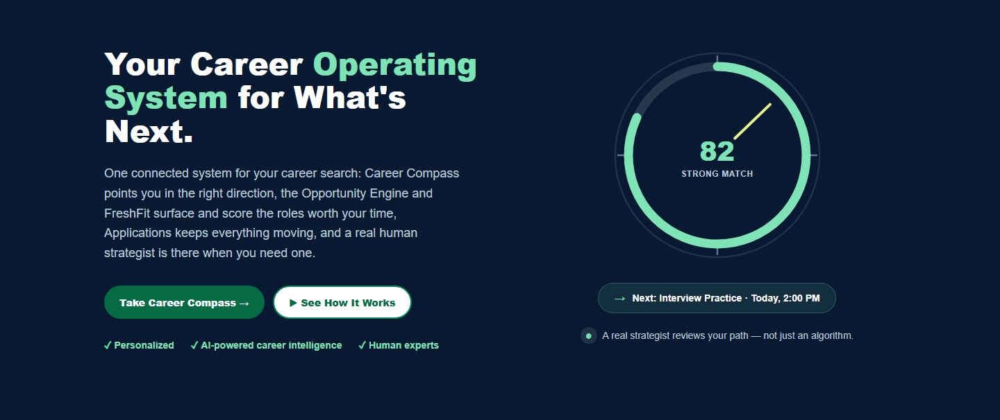
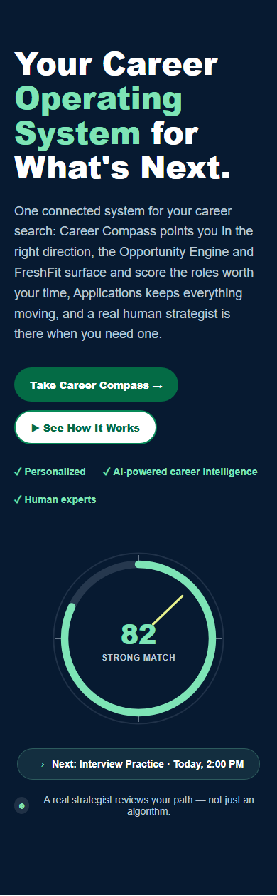

Planning only, per your instruction. Zero production code touched. These are throwaway static mockup files for review, not wired into the app.
The right side of the hero is built from three independent, hand-tuned coordinate systems that all have to agree with each other and with the container's aspect ratio at every breakpoint:
HeroCareerPath.tsx) drawn in a 0–100 viewBox with hand-picked waypoints for the glowing line, the walking figure, and the arrowhead.HeroFloatingCard elements, each pinned by a left%/top% pair in a second, parallel coordinate object (desktopJourneyNodes) that has no relationship to #1 except by manual eyeballing.HeroMobileJourney.tsx) that re-implements a miniature version of the same idea from scratch for mobile, because the desktop composition fundamentally cannot reflow — percentage-based absolute positioning doesn't know about text wrapping, so it can't push a card down or over when its content is longer than assumed.The practical failure mode we hit repeatedly in the last round alone: a card's text wrapped to an extra line (because 8 cards were fixed to one shared width), which silently grew that card a few pixels taller, which silently made it overlap a neighboring absolutely-positioned element that had no idea the card had grown. Nothing in the layout system detects or prevents this — it only surfaces empirically, in a screenshot, after the fact. That's a structural problem, not a tuning problem, and it's why round 10 of the same approach was the wrong next move.
Worth preserving: the navy/mint palette, the card surface language (opaque gradient + border + shadow), the FreshFit ring's visual identity (segmented dial, mint accent), the headline/copy/CTAs verbatim, the trust row, the nav and buttons untouched.
Worth removing: all three coordinate systems, the winding path, the walking figure, and the requirement for a bespoke mobile-only component — replaced below with layouts that use normal CSS flow (grid/flexbox) so one set of markup serves every breakpoint.
Left-copy / right-product split (same fundamental structure as today), but the right side is one polished card instead of eight scattered ones.


What the visualization contains
One card: FreshFit ring + score, one Top Opportunity line, a highlighted "Recommended Next Action" row, one quiet strategist line. That's the whole hierarchy: career info → intelligence → next action, all inside one frame.
Why it's easier to make responsive
It's one component in normal CSS Grid flow. Mobile is grid-template-columns: 1fr instead of two columns — the card just drops below the text. No absolute positioning, no separate mobile component, no coordinate math anywhere.
Strengths
Weaknesses
Structurally different from today: no left/right split at all. Headline+copy+CTAs run full-width and centered; the product visualization is a horizontal 3-step strip underneath, not beside the text.


What the visualization contains
Three equal nodes joined by arrows: Where you are → FreshFit Intelligence → Your next action. The system's reasoning IS the composition — comprehension over feature count, made completely literal.
Why it's easier to make responsive
One flex row, one Tailwind breakpoint (flex-col md:flex-row). The exact same three nodes and the exact same markup serve desktop and mobile — the arrows just switch from horizontal to vertical. No second component, ever.
Strengths
Weaknesses
Left-copy / right-visual split like today's shape, but the right side is not a dashboard at all — one large, confident compass-dial graphic (literally dramatizing "Career Compass," the product's own first step and namesake), plus one action pill and one human-trust line.


What the visualization contains
One SVG compass/dial (mint arc = fit signal, needle pointing into it), the score inside it, one small "Next: Interview Practice" pill below, one small strategist-trust line below that. No card chrome, no dashboard vocabulary at all.
Why it's easier to make responsive
It's a single SVG with intrinsic aspect ratio inside normal flow, plus two short text elements stacked under it. Shrinks as one unit on mobile — no repositioning logic of any kind, because there's only one visual element to place.
Why it feels like FreshlyForward specifically
PRODUCT.md's own evidence is that this is a human-led concierge service ("no bots, no shortcuts," a named strategist, a real founder photo elsewhere) — not a generic SaaS analytics product. Every dashboard-card direction (including A and every one of the last 9 rounds) reaches for "simulate the software." This one reaches for the product's own metaphor and namesake instead: finding direction. It also naturally maximizes negative space, which the brief calls out as a desktop requirement.
Strengths & weaknesses
Direction B, with Direction A as the safer fallback.
B is the only one of the three that makes "this system understands where I am and tells me what I should do next" the composition itself, rather than something you have to infer from a dashboard screenshot. It's also the most structurally bulletproof against exactly the failure mode that broke the last 9 rounds: every node is independent, so a longer job title or a different next-action label can never silently collide with anything else on the page — there is nothing else for it to collide with. The trade-off is real (it gives up the familiar left/right hero shape), but given that shape is precisely what's been fighting us for 9 rounds, I think that's the right trade to make.
If you'd rather keep the classic split-hero silhouette for brand-consistency reasons, A is the pragmatic choice — same shape as today, all the fragility removed. C is offered as the boldest option if you want the hero to feel less like every other SaaS landing page and more distinctly FreshlyForward.
Standalone mockup files (not part of the app build): docs/superpowers/visual-review/2026-09-05-hero-mockups/direction-{a,b,c}.html. Nothing in src/ has been modified. Waiting on your pick before writing any implementation code.